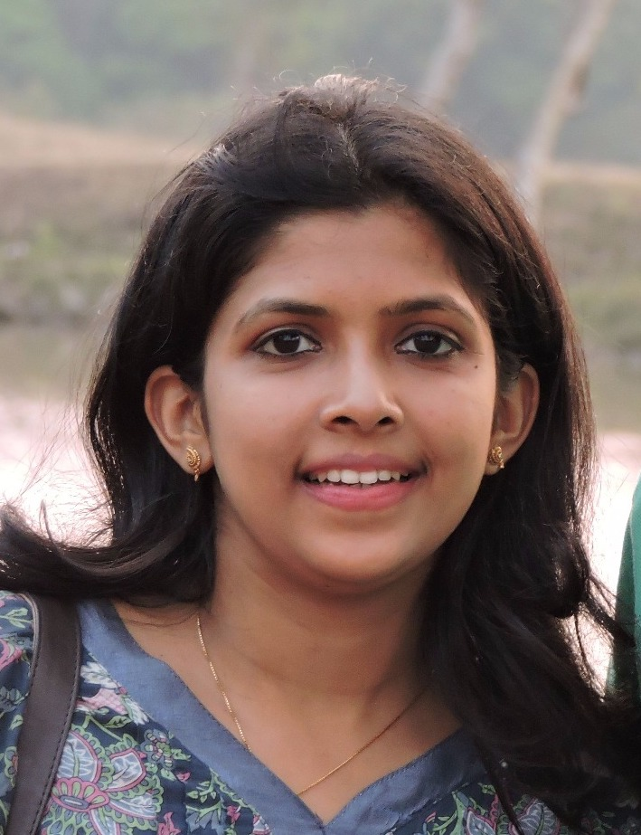

PhD Candidate · Computer Science & Automation · IISc Bangalore
I am a PhD candidate in the Machine Learning Lab at the Indian Institute of Science (IISc), Bangalore, advised by Prof. Chiranjib Bhattacharyya. My research sits at the intersection of Machine Learning, Medical AI, Vision-Language Models (VLMs), and Explainable AI.
I focus on developing robust and interpretable multimodal AI systems for medical imaging, radiology report generation, model editing, and mechanistic interpretability — with the goal of building clinically meaningful AI for real-world healthcare settings.
Focus Areas
Multimodal VLMs for medical imaging, radiology report generation, and clinical NLP.
Chest X-ray interpretation, tuberculosis detection, and automated lesion localization.
Mechanistic interpretability, attribution methods, and trustworthy AI for healthcare.
Task arithmetic, model composition, and targeted editing of large language models.
Investigating attention heads and multimodal reasoning in LLaVA-style architectures.
Robust AI for TB screening and radiology in low-resource clinical settings.
Current Work
With Sam Betson, Chaitanya Murti, Chiranjib Bhattacharyya
With Sam Betson, Rajiv Porana, Chiranjib Bhattacharyya
In collaboration with AIIMS Bhubaneswar
Peer-reviewed Work
OpenReview, 2025
Mentoring & Leadership